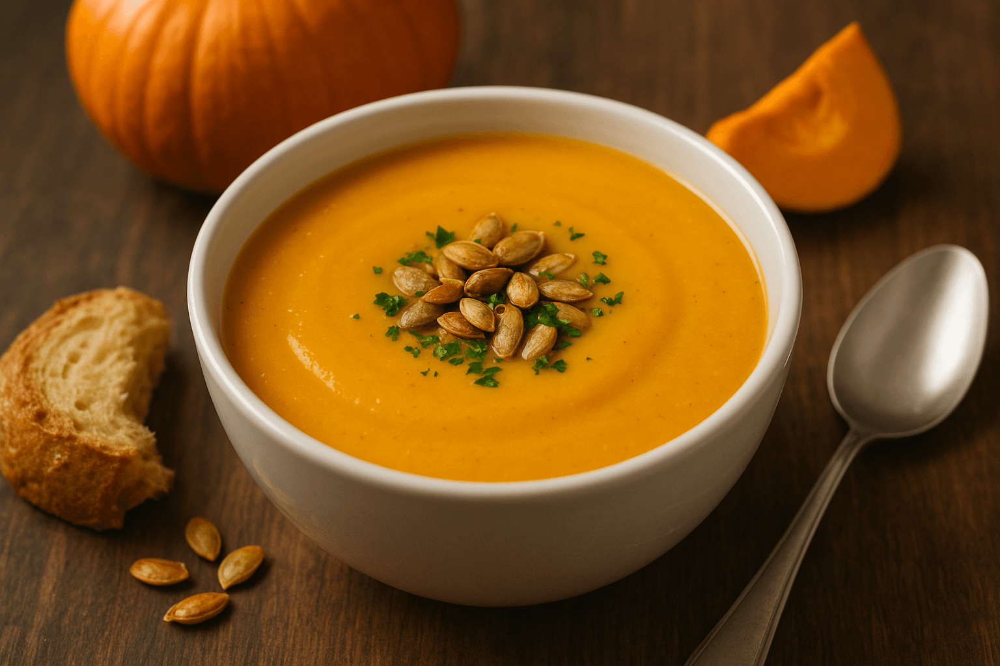

Kabak Çorbası
Malzemeler
- 2 adet kabak
- 1 adet orta boy soğan
- 1 diş sarımsak (isteğe bağlı)
- 1 adet patates (kıvam için, isteğe bağlı)
- 1 yemek kaşığı zeytinyağı veya tereyağı
- 1 yemek kaşığı un (isteğe bağlı, çorbayı bağlamak için)
- 4 su bardağı su veya sebze suyu/tavuk suyu
- 1 çay bardağı süt veya 3-4 yemek kaşığı krema (isteğe bağlı, daha kremamsı tat için)
- Tuz, karabiber
Üzeri İçin
- Dereotu veya nane
Yapılışı
- Hazırlık: Kabakları yıkayıp küçük küpler halinde doğrayın. Soğanı ve sarımsağı ince doğrayın.
- Soteleme: Tencereye yağ ekleyin, soğan ve sarımsağı kavurun. Un kullanacaksanız bu aşamada ekleyip 1-2 dakika kokusu çıkana kadar kavurun.
- Sebzeleri ekleme: Kabakları ve patatesi tencereye ekleyin, birkaç dakika çevirin.
- Pişirme: Üzerine su veya sebze/tavuk suyu ekleyin. Orta ateşte sebzeler yumuşayana kadar (yaklaşık 20 dk) pişirin.
- Blender aşaması: Çorbayı ocaktan alıp blenderdan geçirerek pürüzsüz hale getirin.
- Kremalandırma: Tekrar ocağa alın, süt veya krema ekleyip 2-3 dakika kaynatın. Tuz ve karabiberle tatlandırın.
- Servis: Kaselere alın, üzerine dereotu veya nane serpiştirerek sıcak servis edin.
👉 İsterseniz üzerine kızdırılmış tereyağında nane gezdirebilirsiniz, çok yakışır.